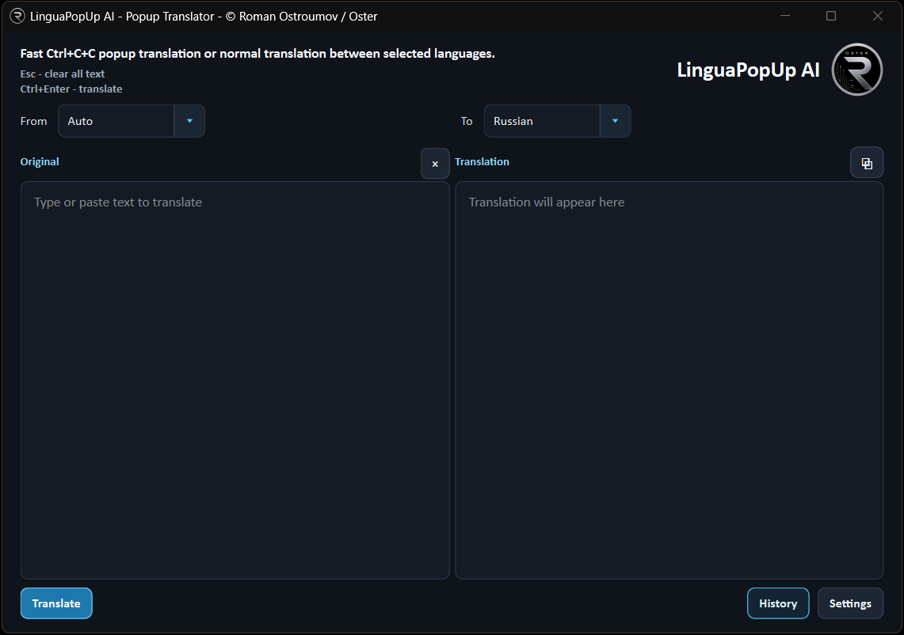

Fast selected-text popup translation
LinguaPopUp AI
A compact AI translator for Windows and macOS. Select text anywhere, press
Ctrl+C+C on Windows or Cmd (Ctrl)+C+C on macOS,
and get a fast popup translation using your own provider API key.

What It Does
- Translates selected text into your chosen target language.
- Handles mixed-language text while preserving meaning as clearly as possible.
- Supports normal manual translation in the main window.
- Synchronizes matching selections and scrolling across original and translation panes.
- Keeps translation history locally on your computer.
- Works with OpenAI, Google Gemini, and Anthropic Claude provider keys.
API Key And Privacy
- LinguaPopUp AI does not include a shared API key.
- Each user enters their own provider key in
Settings -> API. - Keys are stored locally through the operating system key storage when available.
- Text is sent only to the selected AI provider for the current translation request.